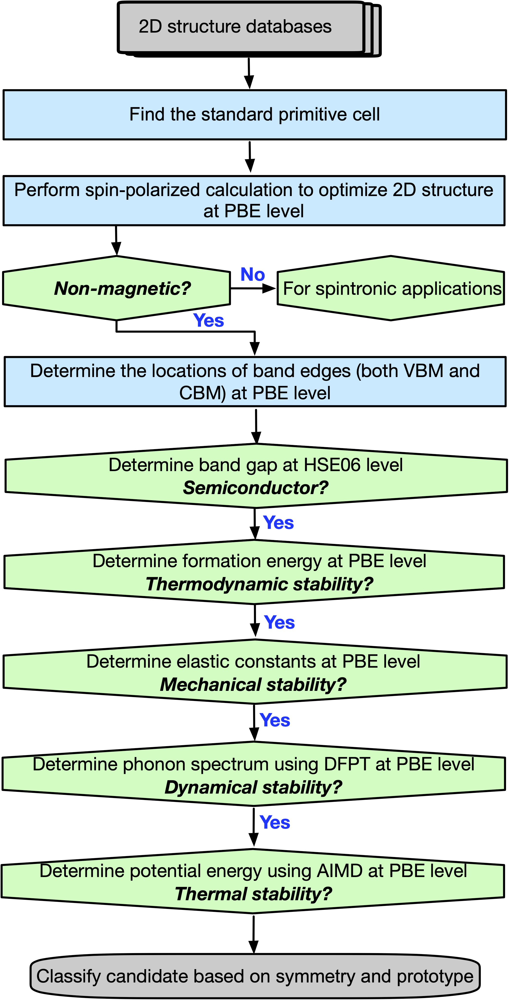

2D Semiconductor Database¶
The database contains structural, elastic, electronic, thermodynamic, and optical properties of around 300 two-dimensional semiconductors. The properties are calculated by using the VASP code with a semi-automated high-throughput screening workflow using the VASPKIT code. The figures were generated by the Matplotlib code. The workflow for the calculation of the different properties is provided below.
{kind=link}
If you are using data from this database in your research, please cite the following paper:
[1] V. Wang, Y.-Y. Liang, Y. Kawazeo, W.-T. Geng, High-Throughput Computational Screening of Two-Dimensional Semiconductors, arXiv:1806.04285.
List of Data¶
The data are generated by automated first-principles DFT calculations. Basically these data in every entry are not well examined, therefore some are considered wrong.
Acknowledgments¶
The calculations were performed on the MASAMUNE-IMR supercomputer at the Institute for Materials Research of Tohoku University, Japan.
License¶
The contents of this web page are licensed under a Creative Commons 4.0 Attribution International License.